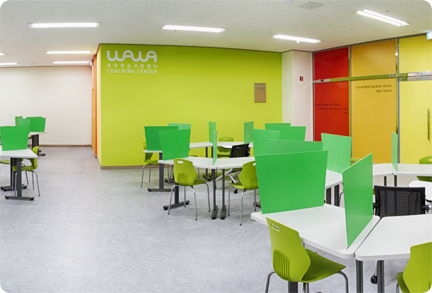

나에게 맞는 출발점
점수뿐 아니라 이해도와 학습 성향을 살펴봅니다. 진단을 바탕으로 교재와 학습 방향을 정합니다.
01 · 와와의 학습코칭
같은 학년이라도 잘하는 부분과 막히는 이유는 다릅니다. 학생별 진단으로 출발점을 찾고, 선생님과 계획을 세운 뒤 직접 실행하고 돌아보는 경험을 쌓습니다.
점수뿐 아니라 이해도와 학습 성향을 살펴봅니다. 진단을 바탕으로 교재와 학습 방향을 정합니다.
선생님과 목표, 시간, 분량을 정하고 플래너로 실행을 확인합니다. 끝내지 못한 이유도 다음 계획에 반영합니다.
오답노트, 백지노트, 마인드맵 등으로 배운 내용을 다시 정리합니다. 학생에게 맞는 복습 방법을 익혀갑니다.

함께 배우는 공간
와와의 ‘둥지 시스템’은 선생님을 중심으로 학생들이 둘러앉는 학습 구조입니다. 각자 공부에 집중하면서 필요한 질문과 지도를 연결하는 공간을 지향합니다.
02 · 영상으로 만나는 와와
본사에서 공개한 학생 이야기와 학습코칭 영상입니다. 재생을 누르면 YouTube 플레이어를 불러옵니다.
영상은 개별 지점·학생의 사례이며 같은 학습 결과를 보장하지 않습니다. 재생 시 YouTube에 연결됩니다. 재생이 제한되면 ‘YouTube에서 보기’를 이용해 주세요.
Coaching Process
수업과 관리가 따로 움직이지 않도록 진단 결과를 플래너, 수업, 오답, 피드백으로 연결합니다.
학년, 학교, 과목별 어려움과 공부 습관을 확인합니다.
개념 결손, 문제풀이 속도, 오답 원인을 나누어 봅니다.
학생에게 맞는 교재, 진도, 복습량과 주간 목표를 잡습니다.
완료한 내용과 다음 주 관리 포인트를 정리합니다.
03 · AI 학습 + 선생님의 코칭
AI 학습은 약한 부분을 찾고 필요한 연습을 이어가는 도구입니다. 영어 말하기, 수학 오답, 국어 영역별 점검, 독서 기록처럼 과목에 맞는 학습 과정을 안내합니다.
과목별 권장 학년과 학습 방식이 다릅니다. 실제 이용 가능한 프로그램은 상담 시 확인해 주세요.
AI 학습 자세히 보기Grade & Subject Guide
학생의 학년과 필요한 과목을 기준으로 대표 안내 페이지를 골라 확인할 수 있습니다.
종합·영수·영어·수학 전문학원과 초등학생·중학생·고등학생학원 안내를 371개 동네별로 확인합니다.
전체 목록 전국센터 371개 동네 보기동네명으로 가까운 학습코칭 안내 페이지를 찾을 수 있습니다.
초등 영어 명일동 초등 영어학원단어, 문장 읽기, 기초 문법과 숙제 습관을 함께 확인합니다.
초등 수학 명일동 초등 수학학원연산, 개념, 문장제, 오답관리 기준을 확인할 수 있습니다.
중등 영어 구파발 중등 영어학원내신 문법, 본문 암기, 독해와 시험 전 복습 루틴을 정리합니다.
중등 수학 산본동 중등 수학학원개념, 유형, 서술형 풀이와 반복 오답을 함께 관리합니다.
고등 영어 송도 고등 영어학원학교 내신과 모의고사 독해를 함께 준비하는 기준을 안내합니다.
고등 수학 불당동 고등 수학학원내신 유형, 수능형 문제, 서술형과 오답 재학습을 확인합니다.
FAQ
전국센터에는 371개 동네별 안내와 초등·중등·고등 영어수학 상세 페이지가 연결되어 있습니다. 가까운 지역 페이지에서 상담 범위와 학습관리 기준을 함께 확인할 수 있습니다.
초등, 중등, 고등 학생 모두 상담 가능합니다. 다만 실제 수업 가능 여부는 지역과 학생 상황에 따라 상담 시 확인합니다.
학생 상황에 따라 영어, 수학 또는 두 과목을 함께 점검할 수 있습니다. 과목별 약점과 학습량을 나누어 봅니다.
계획 작성뿐 아니라 실행 여부, 미완료 이유, 다음 주 조정까지 확인하는 방식으로 진행합니다.
371개 동네별 안내와 초등·중등·고등 영어수학 자식페이지를 확인할 수 있습니다. 각 페이지에서는 지역별 상담 범위, 학습관리 기준, 후기와 FAQ를 함께 볼 수 있습니다.
Start Here
최근 성적, 어려운 과목, 숙제 습관을 알려주시면 상담에서 확인해야 할 포인트를 함께 정리할 수 있습니다.